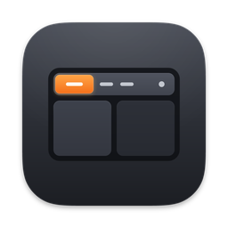

A native, configurable
menu bar for macOS.
Themes, widgets and popups, set up in the app or in plain JSON.
macOS 14 or later on Apple silicon.
Free and open source, MIT License.
Today
System
Controls
Click a line to run it on the bar above.
Configure all of it.
Every widget, style and popup is a setting, per display and per kind of screen. Use Settings, drag widgets on the bar itself, or write the JSON. StableBar applies the file when you save it, and keeps the last working bar if a change is invalid.
Tiling, natively. Workspaces come straight from AeroSpace, yabai or OmniWM, with app icons or one item per window, and update in place instead of recreating windows.
Workspaces in the guideWindow managers
- AeroSpace and OmniWMWorkspace, monitor, window and focus events, live. Reconnects when the window manager restarts.
- yabaiSpaces, windows and displays, refreshed by yabai signals.
- One item per windowWindow titles in the workspace; click one to focus it.
- No tiling managermacOS Spaces, and windows kept clear of the bar.
Configuration
- JSON with a schemaCompletion and validation in your editor.
- Every styleFonts, colors, padding, corners and borders, per widget or per theme.
- Per kind of screenIts own layout, size and theme on the laptop or a monitor.
- ProfilesA different bar on battery, in dark mode or for one app.
Popups
Any widget can open a popup. Build it from rows, columns, text, graphs, lists, buttons, sliders, toggles and search fields, filled with the widget's data.
Custom popups in the guideSystem
Today
Controls
Themes
Choose a theme during setup, cycle through them on your own bar with Try Themes…, or get more from the store. Save as Theme… turns your own look into one.
Pick one here and the bar at the top changes with it.
Themes in the guideAny script is a widget
A widget can run any command that prints text or a JSON object. Refresh it on a timer or on events, and give it a popup with graphs, lists and controls.
The command line queries and edits the running bar, and other tools can send it events.
Create a widget#!/bin/sh
used=$(df -h / | awk 'NR == 2 { print $5 }')
printf '{"text":"%s","icon":"internaldrive"}' "$used"
{
"id": "disk", "type": "script",
"position": "right", "interval": 300,
"command": "~/.config/stablebar/widgets/disk.sh"
}
Every display
Placement that knows about the notch, widgets per kind of screen, and a separate bar for each screen setup. Each kind of screen can have its own theme.
Displays and layoutSee it on your own bar.
Setup walks you through a preset, a theme and a placement, and shows each choice on your real bar. Nothing is saved until you click Finish setup.
macOS 14 or later on Apple silicon.
Releases update themselves.

Then open StableBar from Applications.